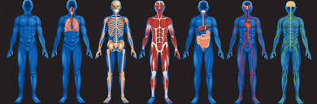

Tu Salud Importa
3. Así funciona mi cuerpo
Chicas y chicos:
Como ya sabemos, en nuestro cuerpo tenemos diferentes aparatos y sistemas. ¿Qué os parece si investigamos cómo funcionan nuestro cuerpo, mediante actividades de investigación y discusión?
¡Pues vamos a ello!
Actividad 1
Vamos a formar pequeños grupos cooperativos. Cada grupo elegirá un sistema del cuerpo humano (sistema digestivo, respiratorio, circulatorio, nervioso, excretor, etc.), sobre los que investigará:
¿Cómo funciona ese sistema?
¿Qué órganos lo componen?
¿Qué hábitos saludables ayudan a su correcto funcionamiento?
¿Cómo influye ese sistema en la salud integral del cuerpo?
Relación con el ODS 3: ¿Cómo se conecta este sistema con el bienestar físico y mental, y con los objetivos de salud global? (por ejemplo, la importancia de la salud cardiovascular para evitar enfermedades).
Actividad 2
Ahora es el momento de organizar la información de manera clara y coherente. Cada grupo elaborarán un póster digital interactivo o una infografía (utilizando herramientas como Canva, Genially o PowerPoint), donde explique el funcionamiento de su sistema, hábitos saludables, y su relación con el ODS 3.
Los pósteres incluirán:
- Diagrama del sistema con sus principales órganos.
- Consejos saludables relacionados con el sistema.
- Un dato de impacto sobre la importancia de ese sistema para la salud global (relacionado con el ODS 3).
Cada grupo presentará su póster al resto de la clase, explicando el funcionamiento de su sistema y los hábitos saludables asociados. El resto de la clase podrá preguntar y reflexionar sobre la importancia de cuidar cada sistema del cuerpo para lograr el bienestar general.
Actividad 3
Es el momento de profundizar en los cambios físicos y emocionales que ocurren durante la pubertad, desarrollando una visión positiva y saludable de esta etapa, y aprenderemos a cuidar nuestro cuerpo para promover el bienestar, en línea con el ODS 3 (Salud y Bienestar).
- En gran grupo, toda la clase, vamos a reflexionar sobre lo que sabéis sobre de la pubertad (cambios físicos, emocionales, sociales).
- Vamos a ver un video que nos habla sobre los cambios en la pubertad.
- En pequeños grupos cooperativos investigaremos sobre cinco ámbitos: cambios físicos en chicos, cambios físicos en chicas, cambios emocionales, cambios sociales e higiene y hábitos saludables en la pubertad. Cada grupo deberá responder sobre cada ámbito a cuestiones como:
¿Qué cambios ocurre en ese ámbito durante la pubertad?
¿Por qué son importantes esos cambios?
¿Qué consejos son necesarios seguir durante esa etapa en ese ámbito?
Finalizada la actividad, un portavoz de cada grupo expondrá al resto de la clase las conclusiones del trabajo realizado en cada ámbito.
- En gran grupo, reflexionamos sobre la conexión de la pubertad con el ODS 3 (salud y bienestar)
Obra publicada con Licencia Creative Commons Reconocimiento Compartir igual 4.0